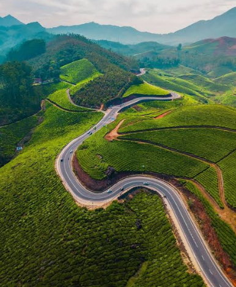
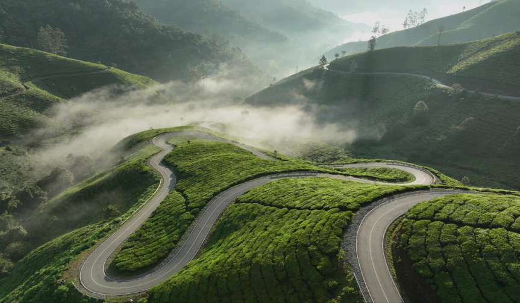
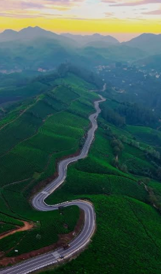

Lockhart Gap View Point is one of the most scenic viewpoints in Munnar, located in the Idukki district of Kerala. The viewpoint is named after the gap between two mountain ranges, which resembles the shape of a heart. Surrounded by rolling hills, tea plantations, mist-covered valleys, and dense forests, it offers breathtaking panoramic views of the Western Ghats.
Visitors can enjoy the cool mountain breeze, capture stunning photographs, and admire the beautiful sunrise and sunset views. The peaceful atmosphere and natural beauty make it a perfect destination for sightseeing, nature walks, and relaxation. Lockhart Gap View Point is a must-visit attraction for tourists exploring the picturesque landscapes of Munnar.



Lockhart Gap View Point is one of the most scenic viewpoints in Munnar, located in Idukki District, Kerala. It is situated about 13 km from Munnar on the Munnar–Thekkady Road. The viewpoint is famous for its heart-shaped mountain gap, panoramic views of tea plantations, mist-covered valleys and cool mountain breeze. It is a favourite destination for photographers, trekkers and nature lovers.
Lockhart Gap became popular during the British tea plantation period. The surrounding tea estates and mountain roads made it an important viewpoint for travellers. Today, it is one of the most visited tourist attractions in Munnar because of its breathtaking landscapes and peaceful atmosphere.
The viewpoint offers spectacular views of tea gardens, misty mountains, deep valleys and winding roads. Visitors enjoy trekking, nature walks, photography, sunrise and sunset views. A natural rock cave near the viewpoint is also a popular attraction. 1
The surrounding area is covered with tea plantations, evergreen forests, grasslands and native plants of the Western Ghats. Visitors may also spot colourful birds, butterflies and other small wildlife.
Today, Lockhart Gap View Point is one of Munnar's most popular viewpoints. It attracts thousands of visitors every year because of its panoramic mountain views, trekking opportunities, peaceful surroundings and excellent photography spots. 2